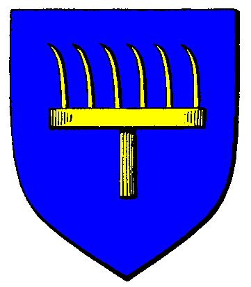

| Übersicht,
Anschläge und Stammtisch (RPG) |
|
Bekanntmachung der Stadt Fürstenberg
|
Sigmar von Fürstenberg
 |
*Boten aus Fürstenberg strömen über die Scherbe, von Trithales bis Sonnensteppe, von Ennos Felsen bis Tol in Mar, auf den Marktplätzen jeder Stadt, auf den Dorfplätzen jedes Dorfes und verkünden eine Nachricht*
Höret her Bürger der Scherbe!
Der Rat der Regenten zu Fürstenerg lässt bekanntgeben das Freiherr Sigmar Heldenhammer, als neuer Herrscher zu Fürstenberg seinen Namen ablegt und von nun an als Graf Sigmar von Fürstenberg, mit neuen Namen und Titel, in der Welt bekannt sein soll. Er möge als dieser in die Geschichtsbücher der Wichtel eingehen und für die Sicherheit und das Wohl der Bürger dieser Stadt Sorge tragen.
Graf Sigmar von Fürstenberg,
Vorsteher von Fürstenberg
Zur 17. Stunde am 29.Saatmond im Jahre 445 |
24.01.11 22:40
 |
|
| Eukal der Jeschmeidige (RIP) |
Eine Stadt und viele Schreibweisen wie es scheint.
Dennoch ein kluger Schritt, möge er Euch walten und schalten lassen nach gutem Gewissen.
Edler Eukal der Jeschmeidige,
Vorsteher von Haugesund,
Reisender Journalist der Taugenichtse,
Trainer der" Eukalyptischen Schmauchkartoffeln"
Zur 18. Stunde am 29.Saatmond im Jahre 445 |
24.01.11 22:57
|
|
| Eukal der Jeschmeidige (RIP) |
Ihr solltet allerdings so langsam aufhören, ständig Boten in alle Teile der Scherbe zu schicken werter von Fürstenberg. Die Stadt ist schon janz kleen geworden.
Eingeschrumpelt möchte man fast meinen, wie Dörrobst oder eines alten Mannes Lümmel.
Eukal der Jeschmeidige,
Reisender Journalist der Taugenichtse,
Trainer der" Eukalyptischen Schmauchkartoffeln"
Zur 18. Stunde am 68.Saatmond im Jahre 448 |
13.10.11 1:22
|
|
Galaton Dragus
  |
Hoch interessant, wenn nicht in Oneiros dem Hafenmeister der Eimer Wasser umgekippt wäre.
Markgraf Galaton Dragus,
Vorsteher von Kristallhafen,
Ehemann der reizenden Tonja Dragus
Zur 16. Stunde am 72.Saatmond im Jahre 448 |
13.10.11 23:07
|
|
Sirius Sentinel
  |
Tja, die eigenen Katastrophen sind immer schlimmer, nicht wahr Markgraf?
Sirius Sentinel
Zur 19. Stunde am 74.Saatmond im Jahre 448 |
14.10.11 11:06
|
|
Galaton Dragus
|
Nein, nein, so ist es auch wieder nicht, wenn ich es schaffe, werde ich dem Herrn Grafen schon einen Höflichkeitsbesuch abstatten!
Markgraf Galaton Dragus,
Vorsteher von Kristallhafen,
Ehemann der reizenden Tonja Dragus
Zur 23. Stunde am 75.Saatmond im Jahre 448 |
14.10.11 17:44
|
|
Fabius Alagos
  |
Siggi das war nix!
Verdammt was ist los? Ich hab nicht Jahre der Hasspredigten investiert, um jetzt wie sagt Ottor doch gleich immer...es bereitet keine Freude ein totes Schaf zu bum...scheren.
Beim haarlosen Hintern Bendurs, es ist nicht die Frage ob, sondern wie man abtritt. Für einen Maulhelden schickt es sich einfach nicht leise zu vergehen und für einen Krieger gehört es sich nicht im Bett zu sterben.
Weiser Fabius Alagos,
Vorsteher von Hafenbastei Sturmbrecher
Zur 11. Stunde am 87.Saatmond im Jahre 449 |
09.01.12 9:58
|
|
| Eukal der Jeschmeidige (RIP) |
Dabei war seine Rückkehr von den Feuerinseln so vielversprechend und so viele ehemalige Boten machten sich in die Stadt auf, um sie erneut zu ihrer Heimat zu machen.
Sir Eukal der Jeschmeidige,
Vorsteher von Je Olde Kratt,
Anführer der glorreichen Nation "Die Taugenichtse der Eukalypse",
Reisender Journalist der Taugenichtse,
Trainer der" Eukalyptischen Schmauchkartoffeln"
Zur 17. Stunde am 87.Saatmond im Jahre 449 |
09.01.12 11:26
|
|
Übersicht,
Anschläge und Stammtisch (RPG)
|